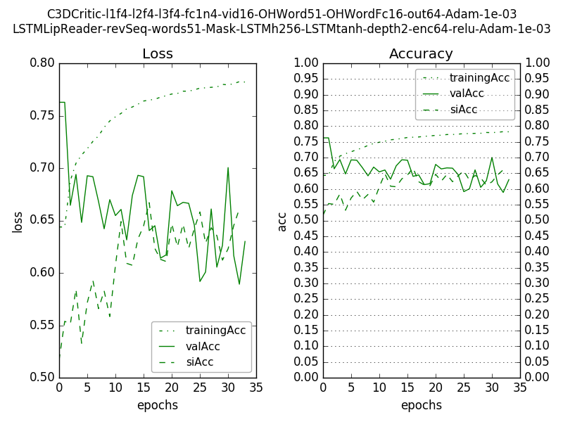

Figure 1: Lipreader architecture

Figure 2: Loss and accuracy for training data, validation data and speaker-independent data, for Lip Reader using LSTM, with Masking at input and reverse sequence of frame input

Figure 3: Critic architecture

Figure 4: Loss and accuracy for training data, validation data and speaker-independent data, for Critic taking only video sequence and predicted word as input. Training data consisted of video input and top-3 predicted words by lipreader.